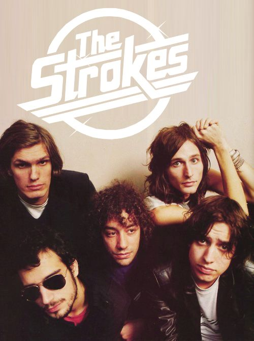

The Strokes are an American rock band from New York City. Formed in 1998, the band is composed of singer Julian Casablancas, guitarists Nick Valensi and Albert Hammond Jr., bassist Nikolai Fraiture, and drummer Fabrizio Moretti. They were a leading group of the early-2000s indie rock revival. The Strokes have released six studio albums between 2001 and 2020. In 2021, they won their first Grammy, for Best Rock Album. Overall, the Strokes have received seven awards from 22 nominations.

"Ten decisions shape your life
You'll be aware of five about."